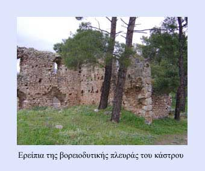

Το Κάστρο της Ωργιάς
 Μετά τη λατινική κατάκτηση της Κωνσταντινούπολης (1204) το κάστρο αποτέλεσε κατοικία Φράγκων ηγεμόνων και αργότερα Καταλανών. Μια ξεχωριστή σφραγίδα έβαλαν οι δυτικοί ηγεμόνες στη ζωή των κάστρων και στην ιστορία κάθε πόλης. Αυτή διατηρήθηκε στη συλλογική μνήμη και με το θρύλο «της Ωργιάς», έναν θρύλο με τον οποίο έχουν συνδεθεί πολλά κάστρα της Ελλάδας. | ||